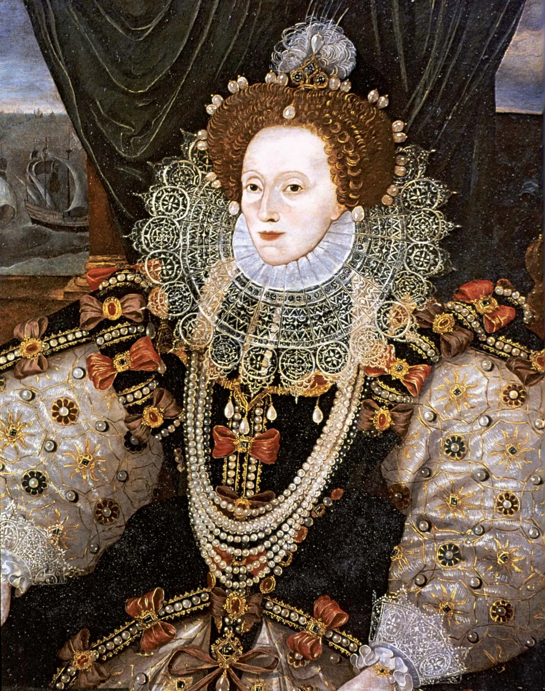

The Virgin Queen, Elizabeth I.

Here's a timeline of the life of Elizabeth I, the Virgin Queen
- Born September 7, 1533
- Before her third birthday, her father Henry VIII had his second wife, her mother Anne Boleyn beheaded on charges of adultery and treason
- Elizabeth received rigorous education normaly reserved for male heirs, consisting of a course of studies centring on classical languages, history, rhetoric and moral philosophy
- In addition to Greek and latin, she became fluent in French and Italian, which in later years served her well in the conduct of diplomacy.
- January 1549, shortly after the death of her stepmother Catherine Parr, Thomas Seymour was arrested for treason and accused of plotting to marry Elizabeth in order to rule the kingdom
- After the death of the Protestant Edward in 1553 and the accession of Elizabeth's older half sister mary, a religious zealot set on returning England, by force if necessary, to the Roman Catholic faith.
- Arrested and sent to the Tower of London after Sir Thomas Wyatt's rebellion in January 1554, Elizabeth narrowly escaped her mother's fate.
- Two months later, she was released from the Tower and placed in close custody at Woodstock.
- At the death of Mary on November 17, 1558, Elizabeth came to the throne amid patriotic demonstrations and other signs of public jubilation.
- Elizabeth restored England to Protestantism. The Act of Supremacy, passed by Parliament and approved in 1559, declared the Queen supreme governor of the church.
- In 1570 Pope Pius V excommunicated Elizabeth and absolved her subjects from any oath of allegiance they had taken to her.
- In 1571 the Queen's informers and spies uncovered an international conspiracy against her life, known as the Ridolfi Plot.
- In 1588 The Invincible Armada reached English waters and the Queen's ships, defeated the Invincible Armada in one of the most famous naval encounters of history.
- In 1601 she gave her famous "Golden Speech", when in the face of bitter parliamentary opposition to royal monopolies, she promised reforms.
- Died March 24, 1603.
If you have time, you should read more about this incredible human being on her Wikipedia Entry